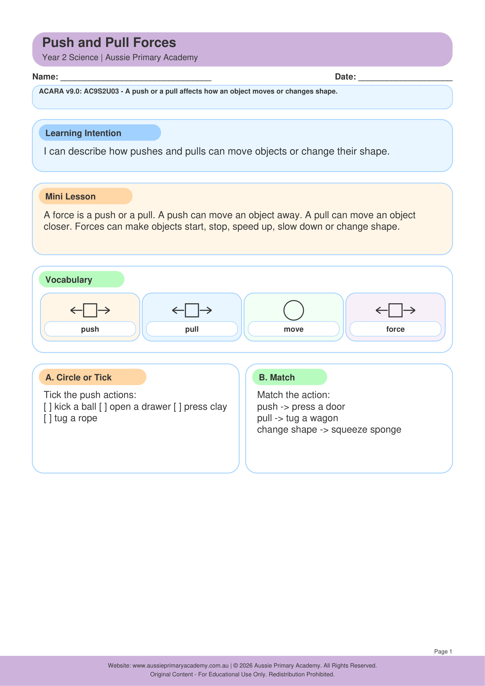

Year 2 · Science · Physical Sciences · Free Printable
Push and Pull Forces
Investigate how pushes and pulls change the movement or shape of objects.
Worksheet Preview

Learning Intention
Students will describe pushes and pulls and how they affect how objects move, change direction or change shape.
Australian Curriculum
AC9S2U03
Investigate how pushes and pulls affect objects and the effect of size and shape on movement.
Teacher Notes
Use toys, balls, toy cars and playdough. Model push, pull, twist, stretch. Link to playground examples - swings, slides, tug-of-war. Introduce simple vocabulary: force, motion, direction.
Skills Practised
- Push and pull forces
- Movement and direction
- Shape change
- Observing and predicting